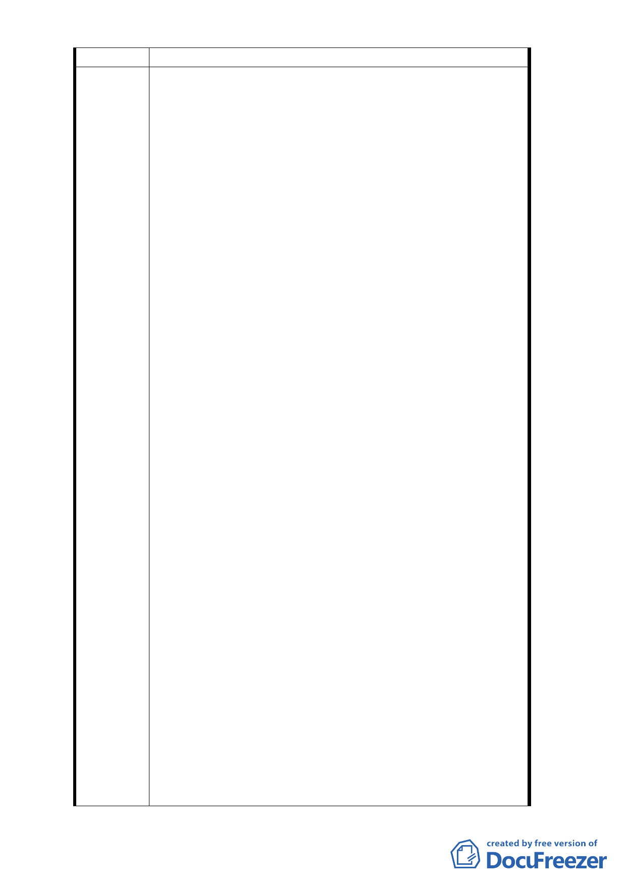

陳情位置
主旨：為小宗地主於 貴會召開「『修訂台北市土地使用分
區（保護區、農業區除外）計畫（通盤檢討）案』
內有關八德路四段、東寧路、縱貫鐵路、八德路四
段 106 巷所圍地區（原唐榮鐵工廠）土地使用計劃
案」開發方式細部計劃專案」（下稱本案）小組會
議時之不實陳述，本公司特予澄清，還原事實，請
查照。
說明：
一、小宗地主於民國 102 年 12 月 10 日由貴會所召開本
案之專案小組會議到場陳述其於原計劃案伊始即
未曾知悉原計劃案內有任何關於應捐地 30％規劃
設計為公園、廣場之用，並登記為台北市政府所有
之決議內容，陳稱此皆為威京公司單方要求；且從
未同意原計畫案內決議應由威京公司整體開發；又
陳稱小宗地主不負任何捐地之義務。
二、然查，在台北地方法院 102 年重訴字第 190 號訴訟
案中由台北市都市發展局提供給台北地方法院之
民國（下同）76 年 10 月 28 日晚間 19 時，由當時
復隆里里長陳連吟與本公司共同主持之本公司與
陳情理由
本案計畫區內西北角小宗土地代表所召開之「八德
路四段以南，縱貫鐵路以北、東寧路以南、八德路
四段 106 巷以東整體街廓開發案」各宗土地所有權
人協調會會議紀錄【該協調會議係依據貴會 76 年 9
月 3 日第 347 次會議及 77 年 3 月 10 日第 357 次會
議中與會委員要求召開，並將會議紀錄呈送 77 年 6
月 6 日專案小組會議審查】內之協調事項即載明：
1.「3.部分所有權人對本案由工業區變更為第三種住
宅區甚為不解，何以隔個街道（光復北路以西）能
成為商業區，本案卻變成第三種住宅區，詢問市政
府都計處是依何種法令根據。」
2.「4.張施秀珠等十四名土地所有權人提出，何以在
本案基地內，將基地變更為有停車場、公園、市場
用地，讓本基地內土地所有權人分攤此依比例（30%
）公共設施面積，全部土地所有權人一致反對，認
為此變更案甚為不合理。」，3.並載有「5.林周阿鑾
土地所有權人等提出尋求本案整體街廓開發計畫
之可行性，獲得其他小宗所有權人同意，同意由威
京公司提出適合本街廓土地計畫方案向都委會提
報告。」【參附件一】。
- 14 -